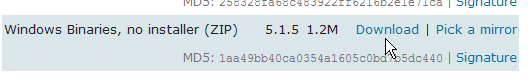

14. Appendices
14.1. The DBMS , SQL Server Express 2005
14.1.1. Installation
SQL Server Express 2005 is available at the URL [http://msdn.microsoft.com/vstudio/express/sql/download/]:
- at [1]: first download and install the .NET 2.0 platform
- in [2]: then install and download SQL Server Express 2005
- Step [3]: Next, install and download SQL Server Management Studio Express, which allows you to administer SQL Server
Installing SQL Server Express creates a folder in [Start / Programs]:
- in [1]: the SQL Server configuration application. Also allows you to start/stop the server
- in [2]: the server administration application
14.1.2. Start / Stop SQL Server
As with previous DBMSs, SQL Server Express has been installed as a Windows service that starts automatically. We will change this configuration:
[Start / Control Panel / Performance and Maintenance / Administrative Tools / Services]:
- in [1]: we double-click on [Services]
- in [2]: we see that a service called [SQL Server] is present, that it is running [3], and that it starts automatically [4].
- in [5]: another service related to SQL Server, called "SQL Server Browser," is also active and set to start automatically.
To change this behavior, double-click the [SQL Server] service:
- in [1]: set the service to manual startup
- in [2]: we stop it
- in [3]: we confirm the new service configuration
We will do the same with the [SQL Server Browser] service (see [5] above). To manually start and stop the SQL Server 2005 service, we can use the [1] application in the [SQL Server] folder:
- in [1]: ensure that the TCP/IP protocol is enabled, then go to the protocol properties.
- in [2]: in the [IP Addresses] tab, [IPAll] option:
- the [TCP Dynamic ports] field is left blank
- the server's listening port is set to 1433 in [TCP Port]
- In [3]: Right-click on the [SQL Server] service to access the server's start/stop options. Here, we start it.
- in [4]: SQL Server is launched
14.1.3. Creating a jpa user and a jpa database
Launch the DBMS as described above, then the administration application [1] via the menu below:
- in [1]: log in to SQL Server as a Windows administrator
- in [2]: configure the connection properties
- in [3]: we enable mixed mode for connecting to the server: either with a Windows login (a Windows user) or with a SQL Server login (an account defined within SQL Server, independent of any Windows account).
- in [3b]: create a SQL Server user
- in [4]: [General] tab
- in [5]: the login
- in [6]: the password (jpa here)
- in [7]: [Server Roles] option
- in [8]: the user jpa will have permission to create databases
Confirm this configuration:
- in [9]: the user jpa was created
- in [10]: logging out
- in [11]: we log back in
- in [12]: Log in as user jpa/jpa
- in [13]: once logged in, the user jpa creates a database
- in [14]: the database will be named jpa
- in [15]: and will belong to the user jpa
- in [16]: the jpa database has been created
14.1.4. Creating the [ARTICLES] table in the jpa database
We create an [ARTICLES] table using the following SQL script:
/* create table */
CREATE TABLE ARTICLES (
ID INTEGER NOT NULL,
NAME VARCHAR(20) NOT NULL,
PRICE DOUBLE PRECISION NOT NULL,
CURRENT_STOCK INTEGER NOT NULL,
MINIMUM_STOCK INTEGER NOT NULL
);
INSERT INTO ITEMS (ID, NAME, PRICE, CURRENTSTOCK, MINIMUMSTOCK) VALUES (1, 'item1', 100, 10, 1);
INSERT INTO ITEMS (ID, NAME, PRICE, CURRENT_STOCK, MIN_STOCK) VALUES (2, 'item2', 200, 20, 2);
INSERT INTO ARTICLES (ID, NAME, PRICE, CURRENT_STOCK, MIN_STOCK) VALUES (3, 'article3', 300, 30, 3);
/* integrity constraints */
ALTER TABLE ARTICLES ADD CONSTRAINT CHK_ID check (ID>0);
ALTER TABLE ARTICLES ADD CONSTRAINT CHK_PRICE check (PRICE > 0);
ALTER TABLE ARTICLES ADD CONSTRAINT CHK_CURRENTSTOCK check (CURRENTSTOCK > 0);
ALTER TABLE ARTICLES ADD CONSTRAINT CHK_MINIMUM_STOCK check (MINIMUM_STOCK > 0);
ALTER TABLE ARTICLES ADD CONSTRAINT CHK_NAME check (NAME<>'');
ALTER TABLE ARTICLES ADD CONSTRAINT UNQ_NAME UNIQUE (NAME);
/* primary key */
ALTER TABLE ARTICLES ADD CONSTRAINT PK_ARTICLES PRIMARY KEY (ID);
- in [1]: we open an SQL script
- in [2]: the SQL script is specified
- in [3]: you must log in again (jpa/jpa)
- in [4]: the script to be executed
- in [5]: select the database in which the script will be executed
- in [6]: execute it
- in [7]: the result of the execution: the [ARTICLES] table has been created.
- in [8]: we request to view its contents
- in [9]: the table's contents.
14.1.5. The SQL Server Express ADO.NET Connector
The ADO.NET connector is the set of classes that allow a .NET application to use the SQL Server Express 2005 DBMS. The connector classes are in the [System.Data] namespace, natively available on any .NET platform.
14.2. MySQL5 DBMS
14.2.1. Installation
The MySQL5 DBMS is available at the URL [http://dev.mysql.com/downloads/]:
- in [1]: select the desired version
- in [2]: select a Windows version
- in [3]: select the desired Windows version
- in [4]: the downloaded ZIP file contains an executable [Setup.exe] [4b] that you must extract and run to install MySQL5
- in [5]: select a typical installation
- in [6]: Once the installation is complete, you can configure the MySQL5 server
- in [7]: choose a standard configuration, the one that asks the fewest questions
- in [8]: the MySQL5 server will be a Windows service
- in [9]: By default, the server administrator is root with no password. You can keep this configuration or set a new password for root. If the MySQL5 installation follows the uninstallation of a previous version, this step may fail. There is no way to undo it.
- in [10]: you are prompted to configure the server
The installation of MySQL5 creates a folder in [Start / Programs]:

You can use the [MySQL Server Instance Config Wizard] to reconfigure the server:
- in [3]: we change the root password (here root/root)
14.2.2. Start / Stop MySQL5
The MySQL5 server was installed as a Windows service that starts automatically, i.e., it launches when Windows starts. This mode of operation is impractical. We will change it:
[Start / Control Panel / Performance and Maintenance / Administrative Tools / Services]:
- in [1]: we double-click on [Services]
- in [2]: we see that a service named [MySQL] is present, that it is running [3], and that it starts automatically [4].
To change this setting, double-click the [MySQL] service:
- in [1]: set the service to manual startup
- in [2]: stop it
- in [3]: we confirm the new service configuration
To manually start and stop the MySQL service, we can create two shortcuts:
- in [1]: the shortcut to start MySQL5
- in [2]: the shortcut to stop it
14.2.3. MySQL Administration Clients
On the MySQL website, you can find DBMS administration clients:
- in [1]: select [MySQL GUI Tools], which includes various graphical clients for either administering the DBMS or using it
- in [2]: select the appropriate Windows version
- in [3]: download an .msi file to run
- in [4]: once the installation is complete, new shortcuts will appear in the [Start Menu / Programs / MySQL] folder.
Launch MySQL (using the shortcuts you created), then launch [MySQL Administrator] via the menu above:
- in [1]: enter the root user’s password (root here)
- in [2]: you are logged in and can see that MySQL is active
14.2.4. Creating a jpa user and a jpa database
We will now create a database named jpa and a user with the same name. First, the user:
- in [1]: select [User Administration]
- in [2]: right-click in the [User accounts] section to create a new user
- in [3]: the user is named jpa and their password is jpa
- in [4]: confirm the creation
- in [5]: the user [jpa] appears in the [User Accounts] window
Now in the database:
- in [1]: select the [Catalogs] option
- in [2]: right-click on the [Schemas] window to create a new schema (designates a database)
- in [3]: name the new schema
- in [4]: it appears in the [Schemata] window
- in [5]: select the [jpa] schema
- in [6]: the objects in the [jpa] schema appear, including the tables. There aren’t any yet. Right-clicking would allow you to create them. We’ll leave that to the reader.
Let’s return to the [jpa] user to grant them full permissions on the [jpa] schema:
- in [1], then [2]: select the user [jpa]
- in [3]: select the [Schema Privileges] tab
- in [4]: select the [jpa] schema
- in [5]: grant the user [jpa] all privileges on the [jpa] schema
- in [6]: confirm the changes
To verify that the user [jpa] can work with the [jpa] schema, close the MySQL administrator. Restart it and log in this time as [jpa/jpa]:
- in [1]: log in (jpa/jpa)
- in [2]: the connection was successful, and in [Schemas], we see the schemas for which we have permissions. We see the [jpa] schema.
We will now create an [ARTICLES] table using an SQL script.
- in [1]: use the [MySQL Query Browser] application
- in [2], [3], [4]: log in (jpa / jpa / jpa)
- in [5]: open an SQL script to execute it
- in [6]: select the following script [schema-articles.sql]:
| /******************************************************************************/
/**** Tables ****/
/******************************************************************************/
CREATE TABLE ARTICLES (
ID INTEGER NOT NULL,
NAME VARCHAR(20) NOT NULL,
PRICE DOUBLE PRECISION NOT NULL,
CURRENT_STOCK INTEGER NOT NULL,
MINIMUM_STOCK INTEGER NOT NULL
);
INSERT INTO ITEMS (ID, NAME, PRICE, CURRENTSTOCK, MINIMUMSTOCK) VALUES (1, 'item1', 100, 10, 1);
INSERT INTO ITEMS (ID, NAME, PRICE, CURRENT_STOCK, MIN_STOCK) VALUES (2, 'item2', 200, 20, 2);
INSERT INTO ITEMS (ID, NAME, PRICE, CURRENT_STOCK, MIN_STOCK) VALUES (3, 'item3', 300, 30, 3);
COMMIT WORK;
/* Check constraint definition */
ALTER TABLE ITEMS ADD CONSTRAINT CHK_ID check (ID>0);
ALTER TABLE ARTICLES ADD CONSTRAINT CHK_PRICE check (PRICE > 0);
ALTER TABLE ARTICLES ADD CONSTRAINT CHK_CURRENT_STOCK check (CURRENT_STOCK > 0);
ALTER TABLE ARTICLES ADD CONSTRAINT CHK_STOCKMINIMUM check (STOCKMINIMUM > 0);
ALTER TABLE ARTICLES ADD CONSTRAINT CHK_NAME check (NAME<>'');
/******************************************************************************/
/**** Unique Constraints ****/
/******************************************************************************/
ALTER TABLE ARTICLES ADD CONSTRAINT UNQ_NAME UNIQUE (NAME);
/******************************************************************************/
/**** Primary Keys ****/
/******************************************************************************/
ALTER TABLE ARTICLES ADD CONSTRAINT PK_ARTICLES PRIMARY KEY (ID);
|
- in [7]: the script loaded
- in [8]: executing it
- in [9]: the [ARTICLES] table has been created
### 14.2.5. Installing the MySQL5 ADO.NET connector
The MySQL5 ADO.NET connector is available (April 2008) at [http://dev.mysql.com/downloads/connector/net/5.1.html]:
 |  |
Installing this connector adds a namespace to the .NET platform:
14.2.6. Installing the MySQL5 ODBC ( ) driver
The MySQL5 ODBC (Open DataBase Connectivity) connector is available (April 2008) at [http://dev.mysql.com/downloads/connector/odbc/3.51.html]:
After installation, you can verify that the ODBC connector is present as follows:
- In [1], select [Administrative Tools] (on XP Pro: Start Menu / Control Panel / Performance and Maintenance / Administrative Tools)
- In [2], double-click [Data Sources (ODBC)]
- In [3], select the [ODBC Drivers] tab
- in [4], the MySQL ODBC driver